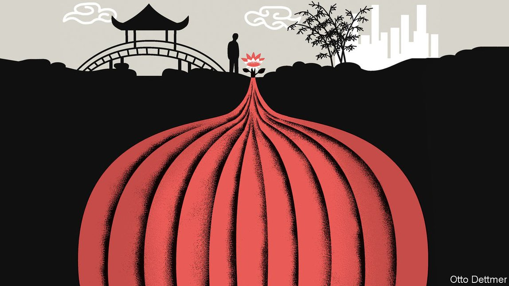

2021-07-15T15:49:49+00:00
Free exchange
自由交流
自由交流
Stubborn optimism about China’s economy after a decade on the ground
在华工作十载，坚持看好中国经济
在華工作十載，堅持看好中國經濟
Even as the tenth year of Xi Jinping’s rule approaches, China is still dynamic and restless
习近平执政近十年，中国仍然充满活力，不安于现状
習近平執政近十年，中國仍然充滿活力，不安於現狀
PICTURE THE moment of confusion in a taxi in Guiyang, a city in south-western China. Your columnist had asked the driver to go to the new district. “The new new district or the old new district?” he asked. It was, it emerged, the old new district—a place that seven years ago, on an earlier visit to Guiyang, had looked like the sort of ghost town then dominating horror stories about China’s economy, full of giant empty buildings. This time, however, the problem was the exact opposite. What was meant to be a quick jaunt turned into a traffic-clogged headache, the taxi crawling along in a sea of red tail lights. The old new district had filled in, and then some.
想象一下笔者在中国西南部城市贵阳的一辆出租车里的困惑一刻。跟司机说开去新区，他问，“是去新新区还是旧新区？”原来，笔者要去的是旧新区。七年前去贵阳时，旧新区到处都是空置的高楼，看起来像一座鬼城——这个词在当时有关中国经济的恐怖故事中随处可见。然而这一次问题截然相反。笔者原本打算快去快回，结果遇到烦人的大塞车，出租车在红色尾灯的长龙中龟速前行。旧新区已不再是一座空城，它甚至有些拥挤不堪了。
想象一下筆者在中國西南部城市貴陽的一輛出租車裡的困惑一刻。跟司機說開去新區，他問，“是去新新區還是舊新區？”原來，筆者要去的是舊新區。七年前去貴陽時，舊新區到處都是空置的高樓，看起來像一座鬼城——這個詞在當時有關中國經濟的恐怖故事中隨處可見。然而這一次問題截然相反。筆者原本打算快去快回，結果遇到煩人的大塞車，出租車在紅色尾燈的長龍中龜速前行。舊新區已不再是一座空城，它甚至有些擁擠不堪了。
One reason why it is good for journalists to stay in a country for a long stint is that it helps breed humility. Assumptions that once appeared iron-clad gather rust as the years roll by. That is true for most places. But it is especially so when covering something as complex as China’s economy, which your columnist had the privilege to do over the past decade.
长期在一个国家工作对记者们不无裨益，原因之一是有助于培养谦逊的品格。经年累月之下，曾经看似铁定的假定开始长出锈迹。这在大多数地方都会发生。但在报道中国经济这样复杂的对象时就更是如此了，而笔者有幸在过去十年从事这项工作。
長期在一個國家工作對記者們不無裨益，原因之一是有助於培養謙遜的品格。經年累月之下，曾經看似鐵定的假定開始長出銹跡。這在大多數地方都會發生。但在報道中國經濟這樣複雜的對象時就更是如此了，而筆者有幸在過去十年從事這項工作。
This, to be clear, is not a mea culpa for being overly gloomy. There were also times of excess optimism about China’s capacity for change. Take rebalancing. As far back as 2007 Wen Jiabao, then China’s prime minister, decried its economy as “unstable, unbalanced”—evidence, it seemed, that leaders grasped the problem and were ready to act. Yet the economy only became more unstable, culminating in a nearly epic meltdown in 2015. And it is as unbalanced as ever, with investment running far ahead of consumption. Nevertheless, it is hard to escape the conclusion that in the economic realm, China got more right than wrong over the past decade. How else to score its performance when, despite many predictions of doom, it doubled in size during that time?
需要澄清的是，这不是要为自己的过度悲观认错。过去也有一些对中国的变革能力过度乐观的时候。以经济再平衡为例。早在2007年，时任总理温家宝就批评经济“不稳定、不平衡”，这似乎表明领导人已经找准了问题并准备采取行动。然而经济却变得更加不稳定，到2015年几乎全面崩溃。而中国经济如今还是一样地不平衡，投资远远超过消费。尽管如此，难免还是会得出这样的结论：在经济领域，中国在过去十年里做对的事多过做错的。否则又该怎么评价它在这个时期——尽管有那么多关于中国经济崩溃的预测——实现了经济规模翻番呢？
需要澄清的是，這不是要為自己的過度悲觀認錯。過去也有一些對中國的變革能力過度樂觀的時候。以經濟再平衡為例。早在2007年，時任總理溫家寶就批評經濟“不穩定、不平衡”，這似乎表明領導人已經找准了問題並準備採取行動。然而經濟卻變得更加不穩定，到2015年幾乎全面崩潰。而中國經濟如今還是一樣地不平衡，投資遠遠超過消費。儘管如此，難免還是會得出這樣的結論：在經濟領域，中國在過去十年里做對的事多過做錯的。否則又該怎麼評價它在這個時期——儘管有那麼多關於中國經濟崩潰的預測——實現了經濟規模翻番呢？
A common riposte is that this success is illusory—that the government has simply delayed the comedown from its debt-fuelled high. The deferral of pain is certainly part of the mix. Perhaps the safest bet in economics is that when growth slows sharply, China will unveil yet more infrastructure projects and call on banks to make still more loans. And if those projects or loans fail, officials have few qualms about orchestrating bail-outs and roll-overs.
常见的一种反驳是这种成功只是错觉，中国政府只是延迟了从由举债推动的高增长的跌落。延迟痛苦当然是其中一个因素。或许，在经济学中最安全的一个押注就是当增长急剧放缓时，中国会推出更多基建项目，并号召银行提供更多贷款。而如果这些项目或贷款失败，官员会毫不犹疑地统筹安排纾困和借新还旧。
常見的一種反駁是這種成功只是錯覺，中國政府只是延遲了從由舉債推動的高增長的跌落。延遲痛苦當然是其中一個因素。或許，在經濟學中最安全的一個押注就是當增長急劇放緩時，中國會推出更多基建項目，並號召銀行提供更多貸款。而如果這些項目或貸款失敗，官員會毫不猶疑地統籌安排紓困和借新還舊。
What is less appreciated is that China’s ability to engage in such engineering is itself a measure of success. The government can lean on its banks because they are enormously profitable to begin with. The telltale signs of an overdrawn economy—high inflation, rampant unemployment and corporate malaise—exist in pockets in China, but they are the exception, not the rule.
不太被人领会的一点是，中国的这种组织能力本身就是一种成功。政府能够依靠银行是因为它们本就利润丰厚。那些经济透支的明显迹象——高通胀、高失业率和企业萎靡不振——在中国小范围存在，但它们是例外而非常态。
不太被人領會的一點是，中國的這種組織能力本身就是一種成功。政府能夠依靠銀行是因為它們本就利潤豐厚。那些經濟透支的明顯跡象——高通脹、高失業率和企業萎靡不振——在中國小範圍存在，但它們是例外而非常態。
This point was driven home when your columnist moved from Beijing to Shanghai in 2014. Each city has its charms, but Shanghai unquestionably offers a more flattering picture of the economy. Beijing, a showcase for political power, is blotted by the hulking headquarters of state-owned enterprises. Day trips take reporters to China’s greatest economic calamities, from overbuilt Tianjin to coal-mine carnage in Inner Mongolia. In Shanghai, which functions remarkably well for a city of 25m, reporters instead hop over to see high-tech innovators in Hangzhou, nimble exporters in Wuxi and ambitious entrepreneurs in Wenzhou. They show that even as the tenth year of Xi Jinping’s rule approaches, two of the fundamental underpinnings of China’s economic dynamism remain intact: red-blooded competition in the private sector and the restless quest of millions upon millions of ordinary people to improve their lot in life.
这一点在笔者2014年从北京搬到上海时体会深切。两个城市各有其魅力，但上海展现出的经济面貌毫无疑问更加正面。政治权力中心北京淹没在庞大的国企总部大楼中。从北京出发做一天的游历，记者就可以看到从天津的过度建设到内蒙古的煤矿乱象等中国最严重的经济灾难。拥有2500万人口的上海运转相当不俗，从上海出发，记者可以到杭州了解那里的高科技创新企业，到无锡拜访经营灵活的出口商，到温州采访雄心勃勃的企业家。从中可以看到，在习近平执政将近十年之际，中国经济活力的两个根基仍然完好：私营部门的激烈竞争，以及亿万普通民众对更好生活的不懈追求。
這一點在筆者2014年從北京搬到上海時體會深切。兩個城市各有其魅力，但上海展現出的經濟面貌毫無疑問更加正面。政治權力中心北京淹沒在龐大的國企總部大樓中。從北京出發做一天的遊歷，記者就可以看到從天津的過度建設到內蒙古的煤礦亂象等中國最嚴重的經濟災難。擁有2500萬人口的上海運轉相當不俗，從上海出發，記者可以到杭州了解那裡的高科技創新企業，到無錫拜訪經營靈活的出口商，到溫州採訪雄心勃勃的企業家。從中可以看到，在習近平執政將近十年之際，中國經濟活力的兩個根基仍然完好：私營部門的激烈競爭，以及億萬普通民眾對更好生活的不懈追求。
These days, saying nice things about China’s economy comes with baggage, not least because of the Communist Party’s insistence that its growth record is proof of its superior political system. It is true that the government has had a crucial hand in the country’s development, starting with the fact that it has been “Infrastructure Week” just about every week in China since 1990.
如今，说中国经济的好话是要有所顾虑的，尤其是因为中国共产党坚持认为经济增长的成就证明了其政治制度的优越性。的确，政府在中国的发展中发挥了至关重要的作用，你首先能想到的是，自1990年以来，在中国几乎每周都是“基础设施周”。
如今，說中國經濟的好話是要有所顧慮的，尤其是因為中國共產黨堅持認為經濟增長的成就證明了其政治制度的優越性。的確，政府在中國的發展中發揮了至關重要的作用，你首先能想到的是，自1990年以來，在中國幾乎每周都是“基礎設施周”。
The correct response to the party’s boasting is not to deny China its success, but to insist on proper attribution. Japan, South Korea and Taiwan were its forerunners in using repressed financial systems to enable investment and in relying on exports to become more competitive. China has repeated all this, albeit at a far greater, and arguably more impressive, scale. At the same time, its sustained rapid growth of the past four decades has less to do with the wisdom of the Politburo than with the work of a brilliant Saint Lucian economist, Sir Arthur Lewis, who in the 1950s explained that shifting labour from low-value farming to higher-value industry can, if managed right, engender just such a catch-up process.
对于中共的自夸，正确的回应不是否认中国的成功，而是坚持找到正确的原因。在此之前，日本、韩国和台湾就利用受抑制的金融体系来促进投资，并依靠出口来提高竞争力。中国大陆重复了这一过程，不过规模要大得多，也可以说更令人赞叹。然而，过去40年中国的持续快速增长与其说是依靠政治局的智慧，不如说是更多体现了圣卢西亚（Saint Lucian）的杰出经济学家阿瑟·刘易斯（Arthur Lewis）的研究成果，他在上世纪50年代解释说，如果管理得当，把劳动力从低价值的农业转移到更高价值的产业可以产生这样的赶超过程。
對於中共的自誇，正確的回應不是否認中國的成功，而是堅持找到正確的原因。在此之前，日本、韓國和台灣就利用受抑制的金融體系來促進投資，並依靠出口來提高競爭力。中國大陸重複了這一過程，不過規模要大得多，也可以說更令人讚歎。然而，過去40年中國的持續快速增長與其說是依靠政治局的智慧，不如說是更多體現了聖盧西亞（Saint Lucian）的傑出經濟學家阿瑟·劉易斯（Arthur Lewis）的研究成果，他在上世紀50年代解釋說，如果管理得當，把勞動力從低價值的農業轉移到更高價值的產業可以產生這樣的趕超過程。
And now for something completely different
今非昔比
今非昔比
The coming decade is sure to prove more challenging. With 65% of Chinese people already in cities and the population close to peaking, Mr Lewis would point out that there is little scope for further gains from turning farmers into factory workers. Parallels between China and the Asian dynamos of yesteryear are breaking down. China is older and more indebted than they were at the same stage. Whereas most countries seek to strengthen the rule of law as they mature, Mr Xi is cultivating stronger party control.
未来十年肯定会更具挑战。由于中国的城镇人口已占65%，而人口总量接近顶峰，刘易斯如若在世会指出，从把农民变成工厂工人中继续获得增长的空间已所剩不多。中国与昔日亚洲经济强国之间的相似之处正在消失。与处于同一阶段的那些国家相比，中国老龄化程度更高，负债也更多。那些国家在进入成熟期时大多数寻求加强法治，而习近平正在加强共产党的控制。
未來十年肯定會更具挑戰。由於中國的城鎮人口已佔65%，而人口總量接近頂峰，劉易斯如若在世會指出，從把農民變成工廠工人中繼續獲得增長的空間已所剩不多。中國與昔日亞洲經濟強國之間的相似之處正在消失。與處於同一階段的那些國家相比，中國老齡化程度更高，負債也更多。那些國家在進入成熟期時大多數尋求加強法治，而習近平正在加強共產黨的控制。
Add to that a treacherous external environment. Faced with the threat of economic decoupling from the West, it is only rational for China to pursue greater self-reliance. Thanks to its size and sophistication, it may well triumph in key sectors, from semiconductors to robotics. But the sorry history of import substitution globally should make clear that this is a sub-optimal strategy involving much waste and eventually leading to lower growth.
与此同时外部环境也颇为险恶。面对与西方经济脱钩的威胁，中国追求更大程度的自力更生完全合理。由于中国经济规模庞大且门类齐全，它很可能在从半导体到机器人技术等关键领域获得成功。但全球范围里进口替代的糟糕历史应该能说明这是一种次优策略，会造成大量浪费，并最终导致增长放缓。
與此同時外部環境也頗為險惡。面對與西方經濟脫鉤的威脅，中國追求更大程度的自力更生完全合理。由於中國經濟規模龐大且門類齊全，它很可能在從半導體到機器人技術等關鍵領域獲得成功。但全球範圍里進口替代的糟糕歷史應該能說明這是一種次優策略，會造成大量浪費，並最終導致增長放緩。
All this is almost enough to turn you into a China bear: to predict not an almighty crash but rather an ineluctable slide towards stagnation. In conversations with analysts and investors, versions of this narrative crop up again and again. That it has become something like the consensus view is the single biggest reason why your columnist, after a long run in China, suspects that its economy will fare considerably better. ■
所有这一切几乎足以让你看空中国——不是预测经济全面崩盘，而是不可避免地滑向发展停滞。在与分析师和投资者的对话中，这种预测以不同形式一再浮现。它已接近成为某种共识，不过在中国工作这么多年后，这正是笔者认为中国经济的走势会比预测好很多的最主要原因。
所有這一切幾乎足以讓你看空中國——不是預測經濟全面崩盤，而是不可避免地滑向發展停滯。在與分析師和投資者的對話中，這種預測以不同形式一再浮現。它已接近成為某種共識，不過在中國工作這麼多年後，這正是筆者認為中國經濟的走勢會比預測好很多的最主要原因。